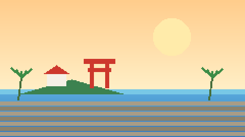

宮崎県・青島
青島の旅ガイド
ゲームの舞台、宮崎・青島へ。鬼の洗濯板や青島神社を、ゲームと現地の両方で巡ってみよう。

キャラクターをタップ。青島の豆知識を教えてくれるよ。
青島ミニクイズに挑戦する ↓ひなたもちと遊ぼう
青島ミニクイズ
キャラクターに聞いた豆知識で、3問にチャレンジ！
青島で立ち寄りたい場所
広告
スポンサーのサイトへ旅行・観光事業者の方へ
宿泊施設、観光体験、交通サービスなど、青島の旅に関連した広告掲載のご相談を受け付けています。
広告掲載について問い合わせる